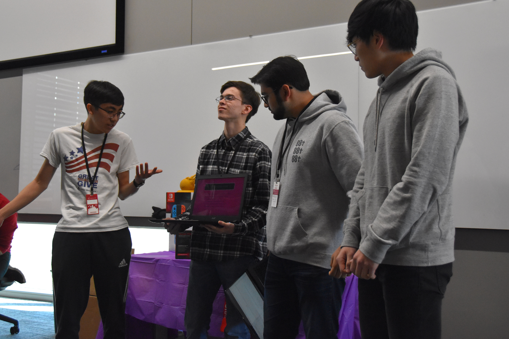

Inspiration
As a group of four students who live on campus, we always found ourselves manually searching up information on Google about UTD. It was tedious to try and look through the app and going to the UTD webpage. We constantly searched things such as when dining options were open, where to go to find a quiet, empty study room, parking availability, and important calendar dates, but never had an easy way to find these items. Always having to open an internet browser and search for links and information should not be necessary to get basic information on campus. To solve these problems we created an Alexa Skill which answers many questions about UTD, and helps make life better around campus.
What it does
The Comet Helper skill has the ability to search for open rooms throughout the campus, and provide the user with that list. The search can be performed on individual buildings, with set time and dates, along with floor searches. The skill also can provide the user with the number of open parking spaces currently available around the campus, at parking structures with live parking data being web scraped by a back-end node.js program. Another function of the skill is the time feature, which can tell the user the operating hours for many dining options and some campus offices. This feature is also expanded by the calendar functionality, which provides many important dates features on the UTD Academic Calendar.
How we built it
We divided into two teams, one focusing on web scraping for the room and parking data, and the other working with AWS Lambda and the Alexa Developer Console to interpret that data into the Voice UI. We created a Lambda function which was where the app did all of its processing, interpreting the data for the skill to best aide the user. The Lambda function connected to the Alexa Developer Console, which provided the list of intents and slots for the user to invoke when calling the skill and saying a command. The web scraper was also built in node.js to run on the Lambda function to streamline the workflow and parses through an HTML file to acquire the room availability and parking data.
Challenges we ran into
We had multiple difficulties with the web scraper, mainly due to our lack of experience in node.js and HTML as we challenged ourselves with a high-level project. Building the Alexa skill had some challenges as well, also due to our unfamiliarity with node.js and the AWS workflow, especially with setting up the correct index.js function.
Accomplishments that we're proud of
The Alexa skill is functioning, which was a great accomplishment in itself as we are unfamiliar with the syntax and flow of operations. We were also able to webscrape information off of a simple website as a test case.
What we learned
As a group we built our individual node.js skills, either through building the Lambda function or the web scraping tool, it was still an amazing learning experience.
What's next for Comet Helper
In the future, we will look to add other important information to our Alexa Skill, such as event information concerning the music program to the athletics program here on campus.
What I used
- Amazon Alexa console
- Node.js serverless skill
- Amazon Lambda for function trigger
- Node.js webscraper